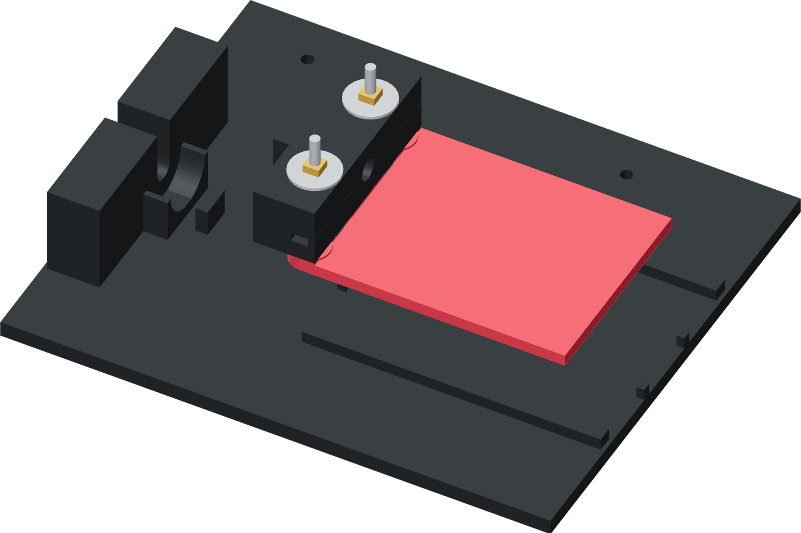

Slide the assembly into A
The T handle and carrier stay bolted together. The complete assembly lifts out for sleeve fitting and drops back into the base guides for insertion.

- Set A flat and lower the joined B/D/E assembly between its guides, with the grip front toward the donor nest.
- Move it unloaded to the paired front stops, then back through the 20 mm guided stroke.
- Keep the carrier flat and square. Clear a string or raised print edge if it binds or lifts.
- With the bare donor and attached faucet lever down at unpressed rest, check the complete unloaded stroke. The carrier, grip and clamps must leave the lever, arches and plunger clear.
Finished when
The unloaded assembly moves freely, stays flat and reaches the paired stops together. Its full stroke leaves the attached faucet lever clear.